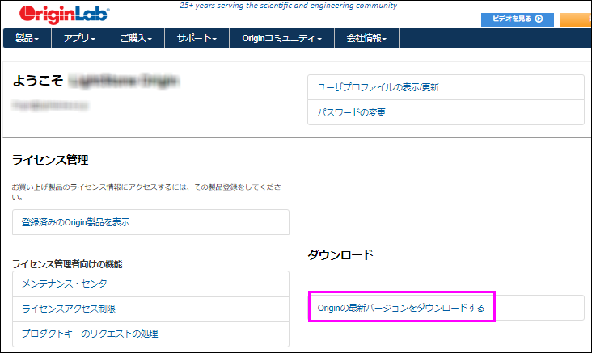
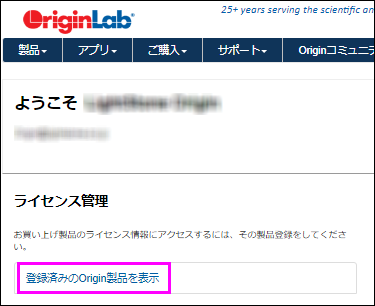
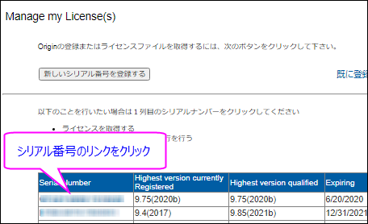
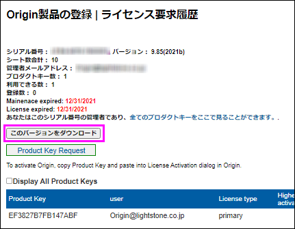

FAQ-1103 登録したシリアル番号でOriginのインストーラをダウンロードするには？
Download-Installer
最終更新日：2021/5/26
- ご自身のWebアカウントでOriginLabのページにてログインします。
- Welcomeページで、ダウンロードの項目にある「Originの最新バージョンをダウンロードする」をクリックします。
- |
- ご自身のWebアカウントでOriginLabのページにてログインします。
- Welcomeページの「登録済みのOrigin製品を表示」をクリックします。
- |
- 登録されているシリアル番号と対応する最高バージョンが表示されます。シリアル番号に対応するインストーラをダウンロードするには、このシリアル番号のリンクをクリックします。
- |
- Origin製品の登録 | ライセンス要求履歴 のページで、このバージョンをダウンロードボタンをクリックすると、このシリアル番号で利用可能な最高バージョンをダウンロードできます。
- |
キーワード:インストール, インストーラ, ビルドダウンロード, 最新バージョン, 最新SR